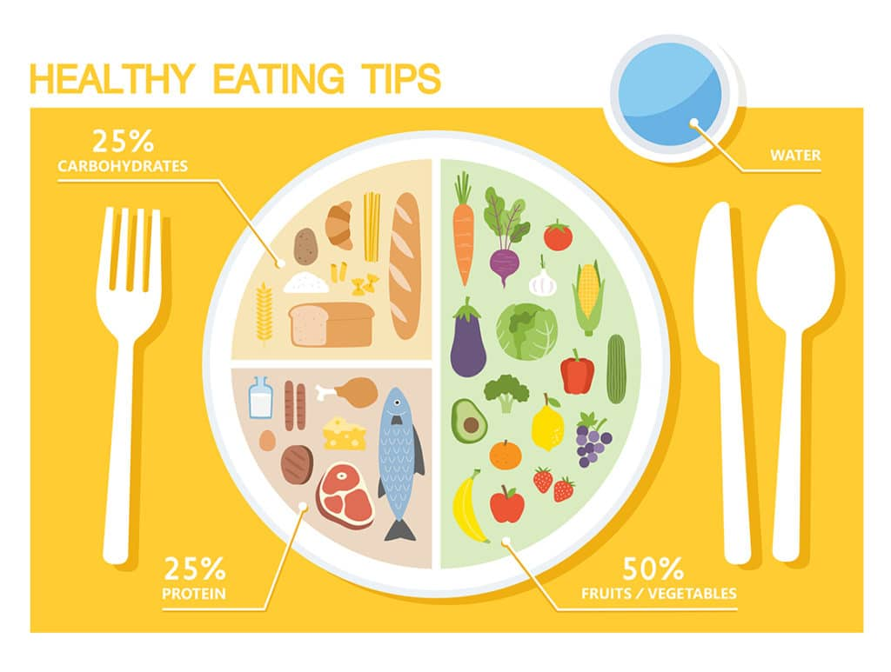
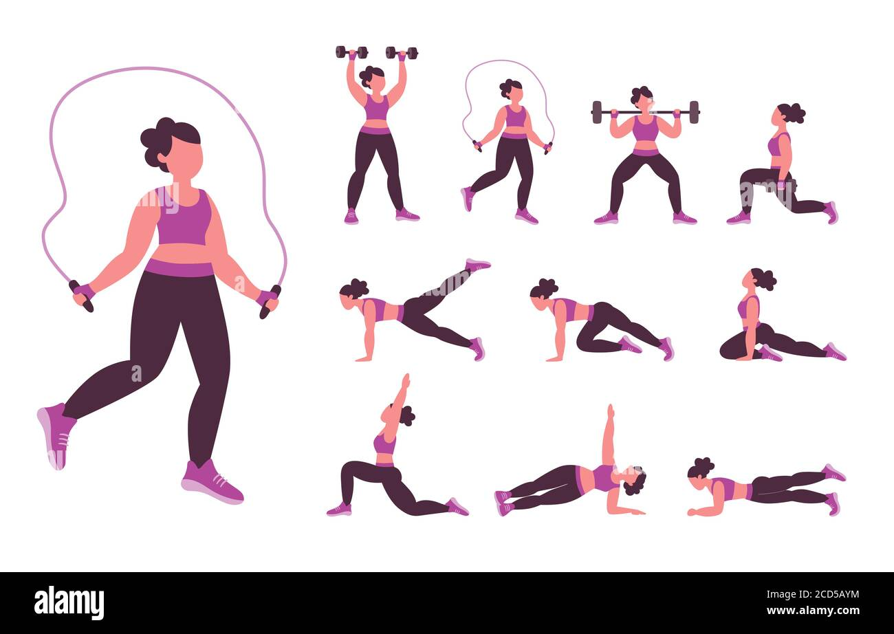

Nutrition Tips
- Eat a Variety of Foods: Include a mix of fruits, vegetables, whole grains, and lean proteins in your diet. This ensures you get a wide range of essential nutrients.
- Stay Hydrated: Drink at least 8 glasses of water a day. Proper hydration helps maintain energy levels, supports digestion, and improves overall well-being.
- Limit Processed Foods: Processed foods are often high in sugars, unhealthy fats, and sodium. Opt for whole, unprocessed foods whenever possible.
- Control Portion Sizes: Be mindful of your portion sizes to avoid overeating. Use smaller plates to help control your portions, and eat slowly to allow your body to signal when it's full.
- Healthy Snacking: Choose snacks like nuts, seeds, fruits, or yogurt instead of sugary treats. These options are packed with nutrients and keep you feeling full longer. 
Exercise Tips
- Aim for 30 Minutes Daily: Engage in at least 30 minutes of moderate physical activity each day. This can include walking, jogging, cycling, or dancing.
- Incorporate Strength Training: Include strength training exercises like push-ups, squats, or lifting weights at least two days a week. This helps build muscle and improve bone density.
- Stay Active Throughout the Day: Avoid sitting for long periods. Take short breaks to stretch, walk, or do some quick exercises to keep your blood flowing.
- Find Activities You Enjoy: Exercise doesn't have to be boring! Find activities you enjoy, such as swimming, playing sports, or practicing yoga, to make staying active fun and sustainable.
- Warm Up and Cool Down: Always start with a warm-up to prepare your body for exercise and end with a cool-down to reduce the risk of injury. 
Addressing Common Health Issues
- Fatigue: To combat fatigue, ensure you're getting enough sleep (7-9 hours per night), staying hydrated, and consuming a balanced diet with sufficient iron and vitamin B12.
- Stress: Manage stress by practicing relaxation techniques like deep breathing, meditation, or yoga. Physical activity and maintaining social connections can also help reduce stress levels.
- Obesity: Maintain a balanced diet and incorporate regular exercise to manage weight. Avoid fad diets and aim for gradual, sustainable weight loss by making healthier food choices.
- Poor Digestion: Improve digestion by eating fiber-rich foods, drinking plenty of water, and avoiding overeating. Chew your food slowly to aid digestion.
- Weak Immune System: Strengthen your immune system by eating a variety of nutrient-rich foods, exercising regularly, getting enough sleep, and managing stress.